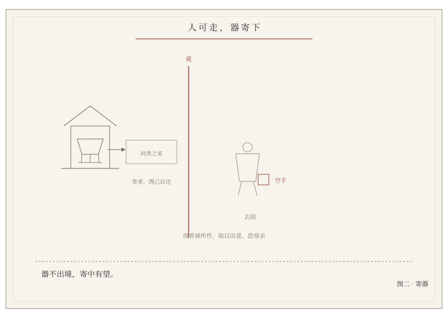

曲礼下 · 二·二十五 · 第 148 课
大夫、士离开本国，祭器不带出境。器寄在别的大夫、士家。注「此用君禄所作，取以出竟，恐辱亲也」。
说什么事：大夫士去国，祭器不逾竟；大夫寓祭器于大夫，士寓祭器于士。
落在哪一层：礼，兼及礼意。论「去」时什么可以带，什么必须留。
为何编在此位：上节说器不可卖，此节说器不可带。禁与禁之间，留出一条寄的道路。
【经】大夫士去國，祭器不逾竟。大夫寓祭器於大夫，士寓祭器於士。
【注】此用君祿所作，取以出竟，恐辱親也。寓，寄也。與得用者言寄，覬己後還。
【疏】「大夫士去国」者，谓三谏不从，及得去而君未赐环，且不仕已也。……「祭器不逾竟」者，按《曲礼》「大夫士去国，祭器不逾竟」，此用君禄所作，若取以出竟，恐辱其亲，故不将去也。云「大夫寓祭器于大夫，士寓祭器于士」者，寓，寄也。谓将去者，寄于同僚，令后得还，故寄之。觊，冀也。己若得还，则取而用之。
去国 疏「三谏不从」而去。非奔亡，是合乎礼的离去。
逾竟 竟，境也。越出国境。
寓 注「寄也」。寄放，非赠予。
与得用者言寄 注语。寄给「用得着它的人」，故寄大夫、士之家，不寄他人。
觊己后还 注语。觊，冀也。指望自己日后回来取用。
大夫、士离开本国，祭器不带出境。大夫把祭器寄放在大夫之家，士把祭器寄放在士之家。
此节处理一个极难的处境：人要走，器不能带走。礼不禁止走，也不许把器带走，于是留下一条中间的路——寄。寄者，不卖、不赠、不忘；是留给「回来」的一件事。
第一层 器从禄来 注一语定其性质：「此用君禄所作」。器不是私产，是君禄所成之物。既然禄出于君，器就不能随己出境。
第二层 恐辱亲 器所承者是祖先之祀。带器出奔，等于让先人跟着自己流浪，此谓辱亲。礼的考虑不止于物，止于亲。
第三层 寄的技术 大夫寄大夫、士寄士，同类相寄。注「与得用者言寄」：寄给会用、能用、能用得合礼的人，器才不至于闲置或误用。
第四层 寄非弃 注「觊己后还」，寄中有望。若一去不返，则此器终归他人；但礼先假定会回来。礼对人心，总是先取厚处。
与今日何干 离职、迁居、出国，总有些东西不能带走也不忍毁弃。找一个同类的人托付，说清是寄不是给——这是古礼给出的处置法，至今可用。
| 左 | 右 |
|---|---|
| 祭器不逾竟 | 用君禄所作，不可出境 |
| 恐辱亲 | 先人之祀不随己流离 |
| 大夫寓于大夫 | 同类相寄，器得所用 |
| 士寓于士 | 同此 |
| 寓者寄也 | 非赠予 |
| 觊己后还 | 寄中有望，礼取厚处 |
画一道竖直的界线（示意国境），线左侧一座小屋、屋前案上放一只三足器；右侧画一只空案与一只手，手作摊开状、掌中无物（示意不带）。小屋与右侧空案之间，画一道弧形虚线，弧线跨过界线又折回，弧上标一枚小圆（示意图器的去向：寄而不出）。不写文字。赭色只用在界线与那枚小圆上。
